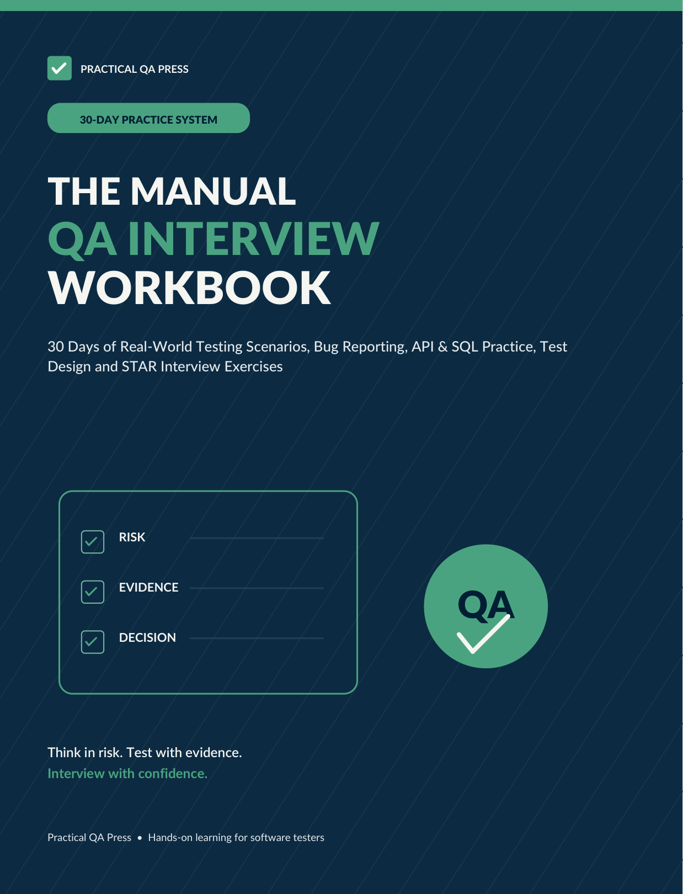
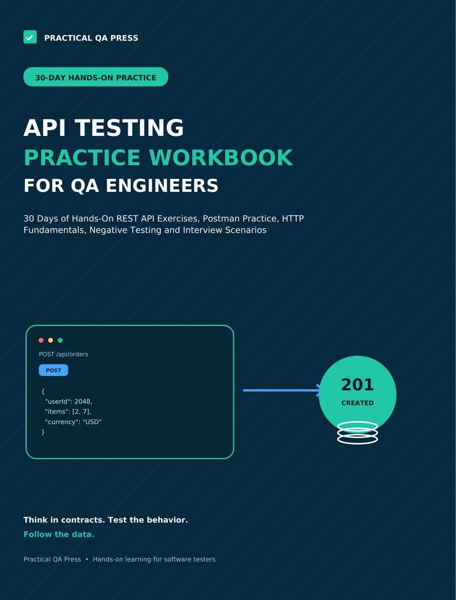
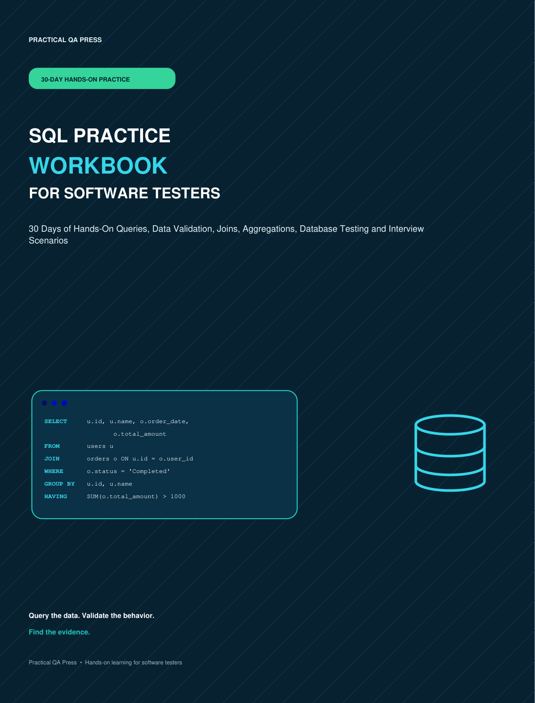

MANUAL QA & INTERVIEWS
The Manual QA Interview Workbook
30 days of realistic testing scenarios, bug reporting, test design, API and SQL practice, and interview exercises.
View on AmazonPRACTICAL QA PRESS
Practice like a real QA engineer.
Start PracticingBUILD PRACTICAL QA SKILLS
Work through realistic testing scenarios, receive instant feedback, and build confidence for real QA work and interviews.
Browse Practical QA Press books Get free QA templatesPRACTICAL QA PRESS
Extend your QA practice beyond the lab with 30-day, scenario-based paperbacks for manual testing, APIs and SQL.

30 days of realistic testing scenarios, bug reporting, test design, API and SQL practice, and interview exercises.
View on Amazon
30 days of hands-on REST API exercises, Postman practice, HTTP fundamentals, negative testing and interview scenarios.
View on Amazon
30 days of queries, data validation, joins, aggregations, database testing and interview scenarios.
View on AmazonBooks are sold on Amazon. Prices, shipping and availability may vary by location.
FREE QA RESOURCES
Download practical, reusable QA tools for bug reporting, test case management, and interview preparation. All resources are free.
FREE TEMPLATE · 2 PAGES
Record the defect, environment, severity and priority, steps to reproduce, expected and actual results, and supporting evidence.
Includes a blank report and a completed checkout-defect example.
FREE SPREADSHEET · EXCEL (.XLSX)
Organize test scenarios, preconditions, execution steps, expected versus actual results, priority and defect references.
Includes a blank tracker, status dropdowns, summary formulas and six completed UI, API and SQL examples.
FREE CHECKLIST · 3 PAGES
Review testing fundamentals, bug reporting, test design, API testing, SQL and realistic QA interview scenarios.
Includes checkboxes, interview-day preparation and space to identify topics for further practice.
Free resources from Practical QA Press. Save your own copy to customize them for your team.
PRACTICAL QA LAB · MY PROGRESS
Track practice sessions, mock interviews and completed Bug Hunt challenges in this browser.
No account needed. Your scores are saved on this browser and device only. They will not sync elsewhere and may be lost if you clear browser data.
Each bar shows your average score for completed attempts in that area.
Scores are saved after a five-question session, a Bug Hunt finish, or a Test Case Lab design review.
Download a JSON backup of completed sessions and challenge scores (not the full bug reports). Keep it somewhere safe; use Import Progress below to restore it here or in another browser.
Restore a Practical QA Lab .json backup. Choose whether to keep your current sessions or replace them. Your data stays in this browser.
Choose a JSON backup file to see a preview before importing.
QA MOCK INTERVIEW
Practice realistic QA interview questions, explain your reasoning and receive feedback after every answer.
INTERVIEW FEEDBACK
MID-LEVEL QA MOCK INTERVIEW COMPLETE
Here is how you performed across all five interview questions.
YOUR INTERVIEW SCORE
See how you scored on each interview question.
ANSWER FEEDBACK
PRACTICE COMPLETE
Here is how you performed across all five scenarios.
YOUR TOTAL SCORE
See how you scored on each scenario.